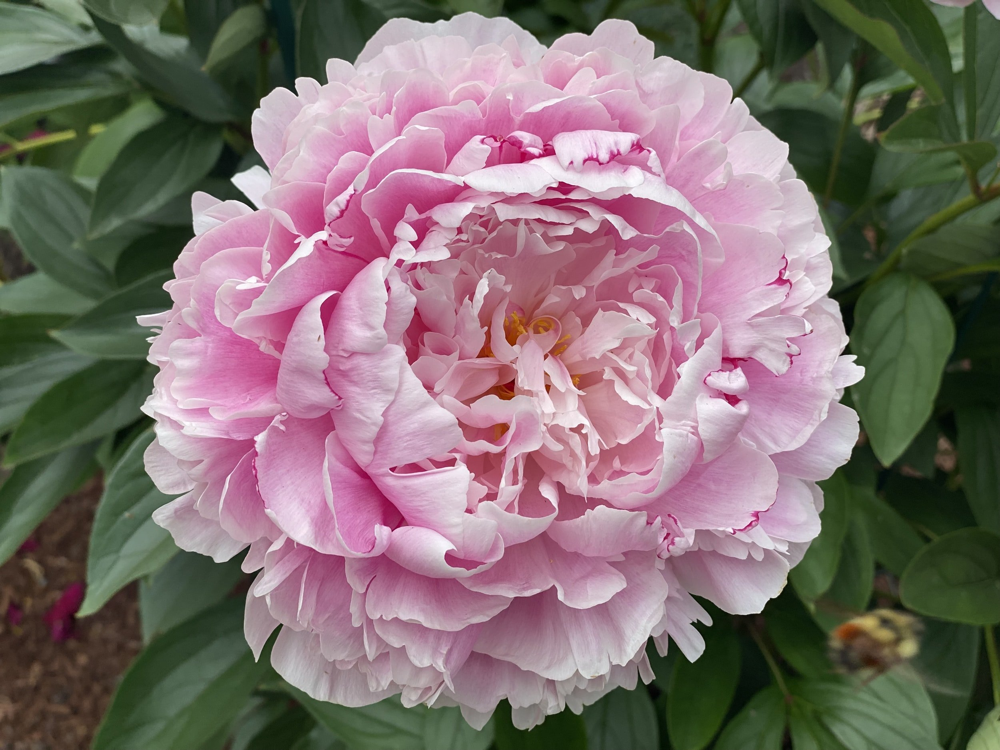
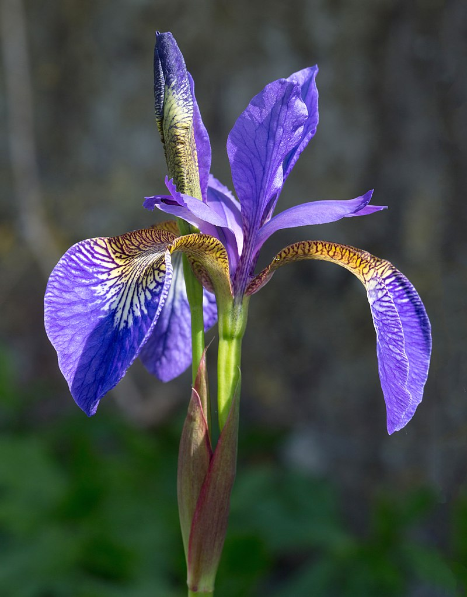
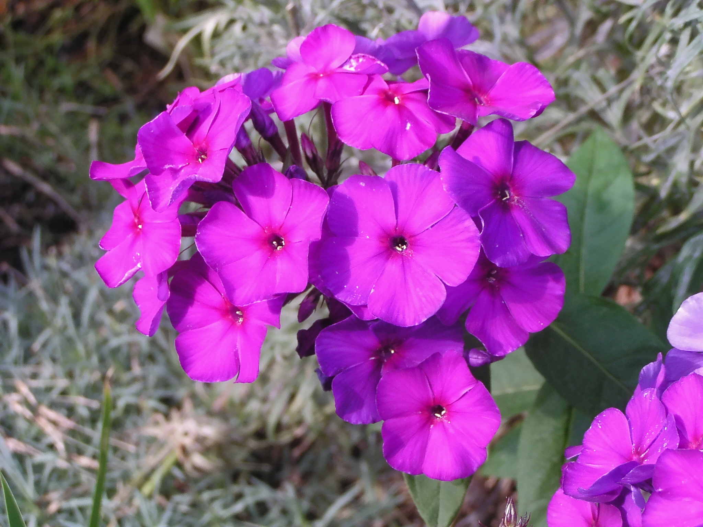
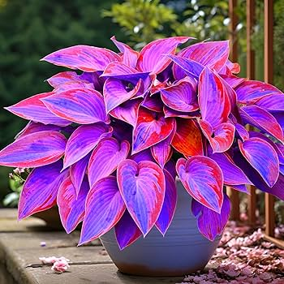
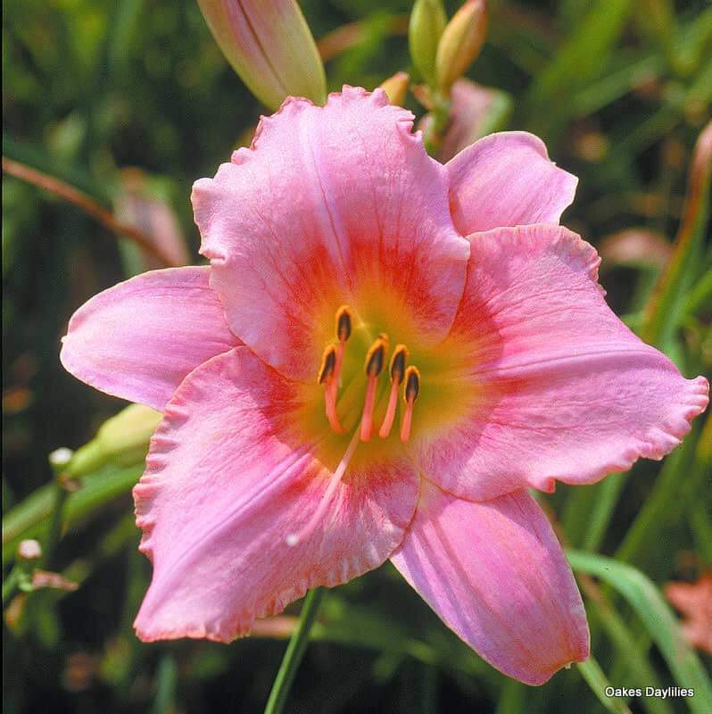

Багаторічні садові квіти Полтавської області
Півонія

Півонія є однією з найпопулярніших багаторічних квітів у Полтавській області. Вона відзначається великими, яскравими квітами та приємним ароматом. Півонії невибагливі у догляді та можуть рости на одному місці багато років.
- Цвіте в кінці весни та на початку літа.
- Має лікувальні властивості та використовується в медицині.
- Існує понад 40 видів півоній.
- Віддає перевагу сонячним місцям з добре дренованою ґрунтом.
- Може досягати висоти до 1 метра.
Ірис

Іриси, або півники, відомі своєю різноманітністю кольорів та форм. Вони добре адаптовані до клімату Полтавщини та додають саду вишуканості. Іриси легко розмножуються та потребують мінімального догляду.
- Назва "Ірис" походить від грецького слова "райдуга".
- Існує близько 300 видів ірисів.
- Можуть рости на сонці та в півтіні.
- Використовуються в парфумерії завдяки приємному аромату коренів.
- Цвітуть з травня по липень залежно від виду.
Флокс

Флокси – багаторічні квіти з яскравими суцвіттями, які цвітуть протягом тривалого часу. Вони чудово ростуть у Полтавській області та створюють яскраві акценти в саду. Флокси стійкі до хвороб і легко переносять зиму.
- Назва "флокс" у перекладі з грецької означає "полум'я".
- Цвітуть з липня до вересня.
- Віддають перевагу сонячним або напівтіньовим місцям.
- Мають приємний аромат, приваблюють метеликів та бджіл.
- Існує понад 60 видів флоксів.
Хоста

Хоста цінується за свої декоративні листя різних відтінків зеленого, синього та жовтого. Вона ідеально підходить для тіньових ділянок саду. Хоста невибаглива та має високу морозостійкість, що робить її популярною в Полтавському регіоні.
- Походить з Далекого Сходу, особливо з Японії.
- Цвіте влітку ніжними фіолетовими або білими квітами.
- Може рости в глибокій тіні, де інші квіти не виживають.
- Довговічна рослина, може рости на одному місці до 20 років.
- Листя використовується в флористиці для створення букетів.
Лілейник

Лілейники відомі своїми яскравими квітами, які цвітуть протягом усього літа. Ці багаторічні рослини легко пристосовуються до різних умов та не потребують складного догляду. Лілейники стійкі до шкідників та хвороб.
- Кожна квітка лілейника цвіте лише один день, але на стеблі їх багато.
- Існує понад 80 000 сортів лілейників.
- Можуть рости на сонці та в напівтіні.
- Витримують засуху та перепади температур.
- Використовуються в ландшафтному дизайні завдяки різноманіттю кольорів.